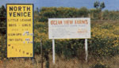
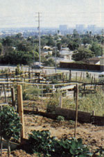
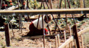
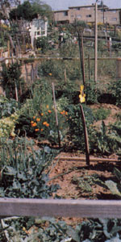
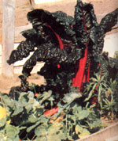

There's a "good thing growin'" in the middle of Los Angeles
There's a "good thing growin'" in the middle of Los Angeles
If you wander around in West Los Angeles, you might come upon a sight that's sure to warm any back-to-the-lander's heart. There, on a hillside boasting a view (on clear days) of the Pacific, is a replica of the traditional household vege table plot . . . expanded a hundredfold!
During the winter months, Ocean View Farms announces its presence only by an unobtrusive sign at the entrance to the Little League field which adjoins it. In the spring and summer, however, the land shouts a different story: The yellow green of fresh produce and the brilliance of flowers proclaim that this isn't just another open space awaiting condominium conversion.
A PASSEL OF PRIVATE PLOTS
Since the urban agricultural experiment got underway in 1977, Ocean View Farms has offered area residents an opportunity to cultivate more than just the hanging plants in their apartment windows. Plots are currently leased for $14 per year, and the gardeners report that the soil-although it's a bit sandy that close to the sea-can be very productive . . . once it has been properly rebuilt.
According to the current OVF chairman (George Dodds, who's been involved with the project since its inception), the idea originated in meetings between representatives of CETA, the Los Angeles mayor's office, and other governmental and community organizations.
"We had long periods that were all talk and no action," he said of the nebulous beginnings common to so many grassroots community projects. After months of frustration, though, some suitable unused land was located . . . but-since the area in question had a view of the coast, good drainage, and access to the "amenities" of city life-many thought that OVF (and its Little League neighbor) wouldn't last long before it fell prey to the machinations of urban developers.
And, as a matter of fact, the property is surrounded on all sides by housing . . . with apartments and condos smack up against its southern boundary. But the urban sprawl has been stayed, in this case, by the landowner: the L.A. Department of Water and Power (which originally planned to put a reservoir on the site . . . a project whose completion now seems unlikely).
A HEALING AGENT
Today-on land donated by city departments that had idle acres under their jurisdiction-there are similar projects underway (each with its own organizers) in other parts of Los Angeles. So the urban farmers of OVF, isolated as they are, are not completely alone in their determination not to allow city life to divorce them from the land that we all depend upon. ( Come to think of it, metropolitan gardens are a little like healing agents invading the bodies of malignant growths on the planet!)
Summer afternoons-on weekends especially-see dozens of city dwellers involved in the kind of work that has sustained humankind for thousands of years. And besides the satisfaction of eating the fruits of their own labor, these gardeners also know exactly how their food was grown . . . a rare piece of knowledge to have in a city today!
Ocean View Farms may not be the country homestead that many of its participants dream about, but it is a big leap in the right direction. Furthermore, it's a fine example of what a few persistent people can do in less than ideal surroundings.
Maybe possibilities for a similar project exist in your neck of the precincts . . . and now's the time to start searching and organizing so that you'll have all the talk behind you, and the action well underway, before spring-and planting time-arrives. Making an urban community garden happen may be a chore, but the new Los Angeles farmers-with fresh tomatoes and salad greens in hand-will tell you that it's worth it!
|
 Hail to the keepers of the ""vacant"" lot! |
 The gardens offer a haven from city life. |
 An avid urban farmer sows a summer crop |
|
 Apartments border hardy produce plots. |
 Reap the rewards: a homegrown harvest! |
|